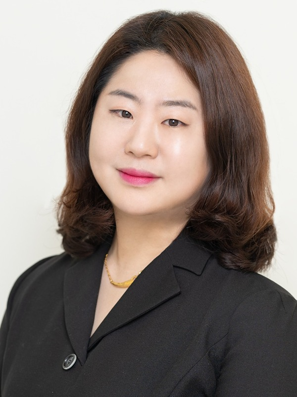
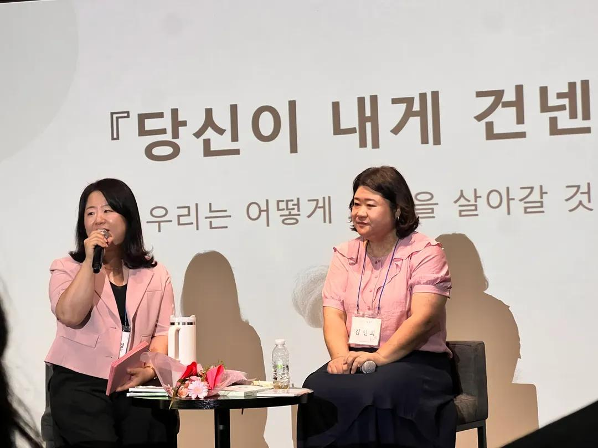
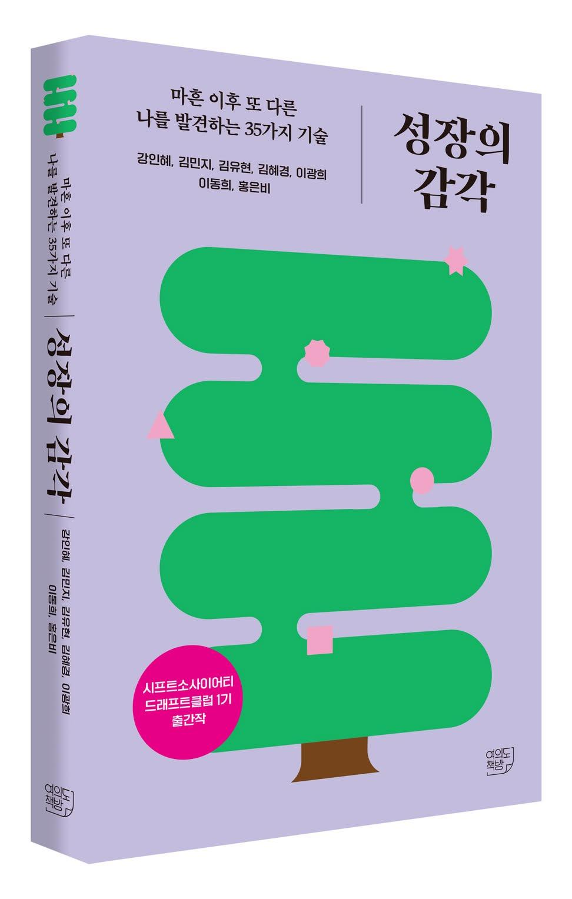

나의 상황을 살펴봅니다.
무슨 일을 해왔는지, 누구에게 내 일을 알리고 싶은지부터 질문합니다.
비커밍 · 스레드 브랜딩 교육
당연하게 여겼던 내 경험에서 브랜드의 재료를 찾습니다.
스레드에 내 이야기를 쓰고, 사람들과 신뢰를 쌓는 일.
비커밍은 강의와 챌린지로 그 실행을 함께합니다.

비커밍의 활동
내 일을 알리고 싶은 1인 기업가와 소상공인,
전문성을 전하고 싶은 강사·전문가·예비 창업자를 위해.
강점을 찾고 방향을 정하는 일부터 실제 글쓰기와 소통까지 연결합니다.

글을 쓰기 전에 누구에게 어떤 도움을 줄 수 있는지 정리합니다. 내 경험과 전문성을 스레드에 맞는 이야기로 표현하고, 공감과 대화를 이어가는 방법을 배웁니다.
비커밍 대표 · 김혜경
22년간 교육과 영업 현장에서 사람을 만나고 성장을 돕는 일을 해왔습니다. 퇴사 후 스레드에서 개인 브랜딩을 시작하며, 내게 익숙한 경험도 누군가에게 필요한 콘텐츠가 된다는 것을 직접 경험했습니다.
그 경험을 바탕으로 비커밍을 시작했습니다. 스레드 강의와 브랜딩 챌린지를 통해 각자의 강점을 찾고, 자기 언어로 표현하며, 사람들과 신뢰를 쌓는 과정을 함께합니다.
김혜경의 스레드 보기
『성장의 감각』 공동 저자 김혜경
『성장의 감각』에서 김혜경은 ‘나다움의 감각’을 이야기합니다.
일과 관계, 배움과 도전 속에서 자신을 발견해 가는 이야기를 책으로 만나보세요.
비커밍의 교육 방식
무엇을 쓰는지보다 먼저, 누구에게 어떤 가치를 전할지 살펴봅니다.
방향을 정한 뒤 콘텐츠와 소통을 실제로 이어갑니다.
해온 일과 전문성에서 나만의 강점과 이야기 재료를 찾습니다.
누구에게 어떤 도움을 줄 수 있는지 정하고, 메시지와 콘텐츠 방향을 세웁니다.
스레드에 내 경험을 쓰고, 꾸준히 대화하며 나에게 맞는 습관을 만듭니다.
콘텐츠로 쌓은 신뢰가 고객 문의와 협업의 기회로 이어지도록 관계를 넓힙니다.
비커밍 브랜딩 챌린지
방향을 알아도 혼자서는 자꾸 멈추게 된다면.
내 이야기를 콘텐츠로 쓰고, 서로의 실행을 나누며
나만의 속도로 브랜드를 만들어 갑니다.
다른 사람의 글을 따라 하기보다 내가 겪고 배운 일에서 출발합니다.
기록과 피드백으로 잘된 점과 다음에 시도할 일을 찾습니다.
조회수와 팔로워뿐 아니라 누구와 어떤 대화를 나누는지 살펴봅니다.
비커밍이 함께 만들어가려는 변화
막막한 글쓰기
다른 사람 따라 하기
혼자 이어가는 활동
교육에서 일상으로
비커밍의 교육은 내 경험을 돌아보고,
직접 써보고, 사람들과 대화하는 과정으로 이어집니다.
무슨 일을 해왔는지, 누구에게 내 일을 알리고 싶은지부터 질문합니다.
일상과 일에서 소재를 찾아 직접 콘텐츠를 작성하고 전달할 메시지를 점검합니다.
일방적으로 알리는 데서 멈추지 않고, 공감과 소통으로 관계를 만들어 갑니다.
스레드에 남긴 비커밍의 활동
모임에서 나눈 이야기, 글쓰기 연습, 함께한 강의와 만남.
김혜경의 공개 게시글을 요약해 모았습니다.
나의 경험이 브랜드가 되는 곳 · 비커밍
나를 어떻게 알릴지 고민이라면,
지금까지 해온 일과 앞으로 하고 싶은 이야기를 들려주세요.